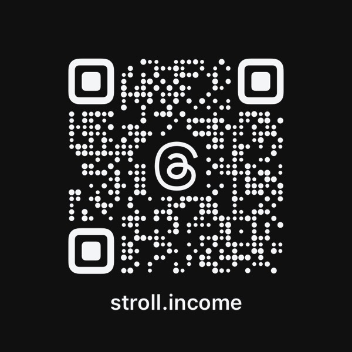

四步循環、持續收租，把時間價值化為你的被動收入
從期權基礎到進階策略，循序漸進的實戰學習路徑
理解選擇權的本質：權利與義務、買方與賣方、Call 與 Put 的四種組合。
Wheel 策略的第一步：如何選股、選履約價、選到期日，收取你的第一筆權利金。
被指派後的下一步：如何用 CC 降低持股成本、持續收租，同時避免常見錯誤。
從單一策略到投資組合：部位管理、資金分配、展期決策與心態紀律。
真倉、真單、持續記錄。不是回測，不是模擬，是我實際開過的每一筆單。
教自己的爸媽用 3C，是什麼感覺，相信大家都懂。光是教我媽改個手機鬧鐘，就可以來回十分鐘，中間還會被唸一句「你講太快我聽不懂」。所以當我決定要教她用期權收租的時候，我心裡是有底的，這大概不會太輕鬆。 後來她真的開出第一張期權單了。整個教學過程，我都記在方格子裡。
新手實戰美股輪子策略一個月，到底能賺多少？答案是 $652 美金。本金 25,000 美元，操作 NFLX、TSM、NVDA、INTC 四檔，8 筆交易全數安穩入袋，月報酬率 2.6%。這篇紀錄我怎麼設目標、怎麼選股、為什麼這個策略適合想多一份現金流的小資族。 怎麼選這四檔、每筆怎麼設定、為什麼 8 筆都沒被指派——完整操作邏輯在方格子。
四月份的台股漲幅就不用多說了，打開帳戶大家都看到了。 那種「市場幾乎得了不會跌得病」的感覺，應該不少人有共鳴，美股那邊也沒閒著，費城半導體指數（SOX）締造了史上最長的連漲紀錄，AI 概念股繼續發功，整個指數像是充滿多巴胺一樣往上衝。 這時候市場大概會自動分成兩派人。 我選了第三條路，並且把當時的判斷和操作記在方格子。
從零開始，走到第一筆收租——我陪你走完這段路。
想開始做 Sell Put 收租，但打開 IBKR 或 Webull 的介面，完全不知道按鈕在哪裡、要填什麼數字，就先關掉了。
看了很多教學影片和文章，理論上懂了，但就是不敢下那第一單。萬一搞錯怎麼辦？萬一被指派了然後不知道接下來要幹嘛？
或者更早一步——還沒開好海外帳戶，甚至不確定自己的資金規模適不適合這個策略。想找人問，但又不想在論壇裡被一堆人海投資建議轟炸。
這個陪跑計畫，就是為這個狀態的你設計的。

掃碼加 Threads每一個 Greek 都在告訴你：你的部位對什麼因素有多敏感
Sell Put 與 Covered Call 年化報酬率 · 一鍵估算
中英對照，隨時查閱